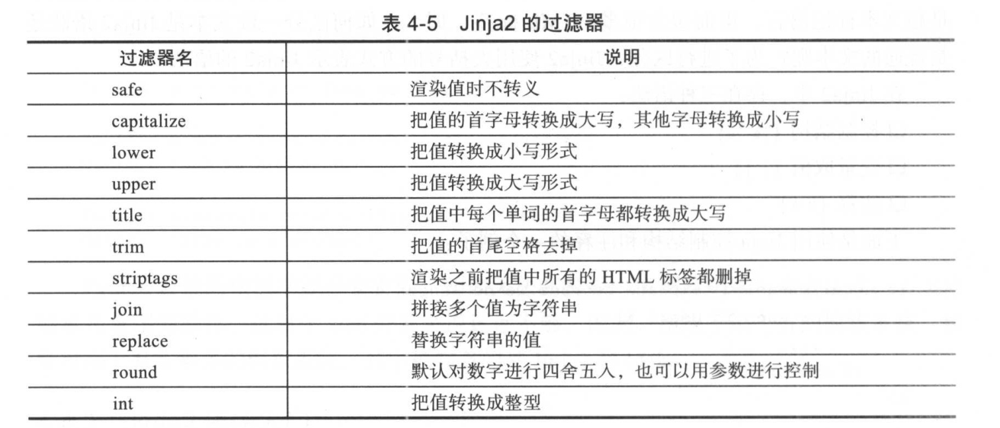

Contents
14.15. Jinja2模板¶
14.15.1. 模板介绍¶
Python标准库中自带的简单模板¶
#!/usr/bin/env python
# -*- coding:utf8 -*-
# auther; 18793
# Date：2020/3/19 15:00
# filename: sample01.py
from string import Template
s = Template('$who is a $role')
print(s.substitute(who="hujianli", role="teacher"))
print(s.substitute(who="xiaojian", role="student"))
# hujianli is a teacher
# xiaojian is a student
Jinja2是Flask的一个依赖，如果已经安装了Flask，Jinja2也会随之安装， 当然，也可以单独安装Jinja2:
C:\Users\18793>pip install jinja2
C:\Users\18793>python -c "import jinja2"
1.语法块¶
Jinja2中，存在三种语法：
1.控制结构{%%}
2.变量取值{{}}
3.注释{# #}
2.变量¶
Jinja2 模板中使用{{}}语法表示一个变量，它是一种特殊的占位符，告诉模板引擎这个位置的值在渲染模板时获取。 Jinja2识别所有的Python数据类型，甚至是一些复杂的类型，如列表、字典和对象等。
<p> A value from a dictionary : {{ mydict['key'] }}.</p>
<p> A value from a list : {{ mylist[3] }}.</p>
<p> A value from a list,with a variable index: {{ mylist[myintvar] }}.</p>
<p> A value from an object's method: {{ myobj.somemethod() }}.</p>
3.Jinja2中的过滤器¶
4.Jinja2中的控制结构¶
Jinja2中if语句，类似Python中的if语句，需要使用endif语句作为调节判断的结束。
{% if kenny.sick %}
Kenny is sick.
{% e1if kenny.dead %}
You ki11ed Kenny！ You bastard!!!
{% else %}
Kenny 100 Okay
{% endif %}
5.Jinja2的for循环¶
<h1>Members</h1>
<ul>
{% for user in users %}
<li> {{ user.username }} </li>
{% endfor %}
</ul>
<dl>
{% for key,value in d.iteritens() %}
<dt>{{ key }}</dt>
<dd>{{ value }}</dd>
{% endfor %}
</dl>
Jinja2实战¶
案例1 基本功能演示¶
simple.html
<!DOCTYPE html>
<html lang="en">
<head>
<meta charset="UTF-8">
<title>{{ title |trim }}</title>
</head>
<body>
<!-- 注释 -->
<ul id="navigation">
<!-- for语句,以endfor结束 -->
{% for item in items %}
<!-- 访问变量的属性 -->
<li> <a href="{{ item.href }}">{{ item['caption'] }}</a> </li>
{% endfor %}
<p>
{{ content }}
</p>
</ul>
</body>
</html>
simple.py
#!/usr/bin/env python
# -*- coding:utf8 -*-
# auther; 18793
# Date：2020/3/19 15:50
# filename: sample.py
import jinja2
import os
def render(tpl_path, **kwargs):
path, filename = os.path.split(tpl_path)
return jinja2.Environment(
loader=jinja2.FileSystemLoader(path or "./")
).get_template(filename).render(**kwargs)
def ceshi01_simple():
title = "Title H "
items = [{'href': 'a.com', 'caption': 'ACaption'}, {'href': 'b:com', 'caption': 'Bcaption'}]
content = "This is content"
result = render("simple.html", **locals())
print(result)
if __name__ == '__main__':
ceshi01_simple()
案例2 使用Jinja2生成HTML表格和XML配置文件¶
hzfc.html
<!DOCTYPE html>
<html lang="en">
<head>
<meta charset="UTF-8">
<title>Title</title>
</head>
<body>
<table>
{% for item in items %}
<tr>
<td>{{ loop.index }}</td>
<td><a href="{{ item['href'] }}">{{ item['title'] }}</a> </td>
</tr>
{% endfor %}
</table>
</body>
</html>
sample02.py
#!/usr/bin/env python
# -*- coding:utf8 -*-
# auther; 18793
# Date：2020/3/19 16:09
# filename: sample02.py
import jinja2
import os
def render(tpl_path, **kwargs):
path, filename = os.path.split(tpl_path)
return jinja2.Environment(
loader=jinja2.FileSystemLoader(path or "./")
).get_template(filename).render(**kwargs)
links = [{'title': '杭州地铁三期规划正式获批 3号线即将上马', 'href': 'http://zzhz.zjol.com.cn/system/2016/12/21/021323123.shtml'},
{'title': '杭州地铁三期规划正式获批 4号线即将上马', 'href': 'http://zzhz.zjol.com.cn/system/2017/11/12/021323123.shtml'},
{'title': '杭州地铁三期规划正式获批 5号线即将上马', 'href': 'http://zzhz.zjol.com.cn/system/2017/10/10/021323123.shtml'},
]
content = render('hzfc.html', items=links)
print(content)
使用Jinja2生成XML配置文件¶
下面这个例子使用Jinja2生成xml格式的配置文件。
base.cfg
<?xml version="1.0" encoding="UTF-8" ?>
<pass_service1>
<issa_server_a_host>{{ issa_server_a_host }}</issa_server_a_host>
<issa_server_a_port>{{ issa_server_a_port }}</issa_server_a_port>
<issa_server_c>{{ issa_server_c_host }}:{{ issa_server_c_port }}</issa_server_c>
</pass_service1>
pass_service1_template_xml
<?xml version="1.0" encoding="UTF-8" ?>
<pass_service1>
<issa_server_a_host>{{ issa_server_a_host }}</issa_server_a_host>
<issa_server_a_port>{{ issa_server_a_port }}</issa_server_a_port>
<issa_server_c>{{ issa_server_c_host }}:{{ issa_server_c_port }}</issa_server_c>
</pass_service1>
pass_service2_template_xml
<?xml version="1.0" encoding="UTF-8" ?>
<pass_service2>
<issa_server_b_host>{{ issa_server_b_host }}</issa_server_b_host>
<issa_server_b_port>{{ issa_server_b_port }}</issa_server_b_port>
<issa_server_c>{{ issa_server_c_host }}:{{ issa_server_c_port }}</issa_server_c>
</pass_service2>
sample03.py
#!/usr/bin/env python
# -*- coding:utf8 -*-
# auther; 18793
# Date：2020/3/19 16:25
# filename: sample03.py
import os
import jinja2
try:
import configparser
except:
import ConfigParser as configparser
NAMES = ["issa_server_a_host", "issa_server_a_port", "issa_server_b_host", "issa_server_b_port", "issa_server_c_host",
"issa_server_c_port"]
def render(tpl_path, **kwargs):
path, filename = os.path.split(tpl_path)
return jinja2.Environment(
loader=jinja2.FileSystemLoader(path or "./")
).get_template(filename).render(**kwargs)
def parser_vars_into_globals(filename):
parser = configparser.ConfigParser()
parser.read(filename)
for NAME in NAMES:
globals()[NAME] = parser.get('DEFAULT', NAME)
def main():
parser_vars_into_globals("base.cfg")
with open("pass_service1.xml", "w") as f:
f.write(render("pass_service1_template.xml", **globals()))
with open("pass_service2.xml", "w") as f:
f.write(render("pass_service2_template.xml", **globals()))
if __name__ == '__main__':
main()
生成的pass_service1.xml文件内容如下：
<?xml version="1.0" encoding="UTF-8" ?>
<pass_service1>
<issa_server_a_host>10.166.226.151</issa_server_a_host>
<issa_server_a_port>8101</issa_server_a_port>
<issa_server_c>10.166.226.153:8103</issa_server_c>
</pass_service1>